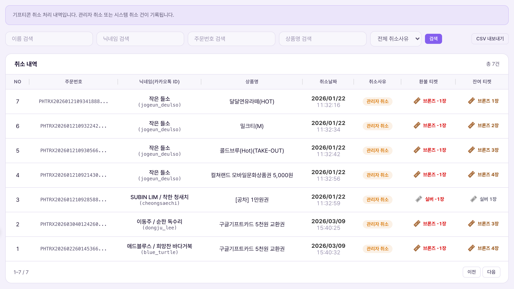

취소 내역은 구매/사용 내역에서 [취소] 처리된 건만 따로 모아보는 감사·집계용 화면이다. 이 화면 자체에는 취소를 실행하는 버튼이 없다 — 취소는 항상 구매/사용 내역 화면에서 일어나고, 여기는 그 결과가 자동으로 쌓이는 결과지다.Lịch sử hủy là màn tổng hợp riêng dùng để kiểm toán·thống kê, chỉ hiển thị những đơn đã bị [Hủy] tại Lịch sử mua/dùng. Bản thân màn này không có nút thực thi hủy — việc hủy luôn diễn ra ở màn lịch sử mua/dùng, còn đây là nơi kết quả tự động được tích vào.

| 컬럼Cột | 의미Ý nghĩa | 비고Ghi chú |
|---|---|---|
| NO | 취소 건 일련번호Số thứ tự đơn hủy | -- |
| 주문번호Mã đơn hàng | 원래 교환 건의 주문번호(구매/사용내역과 동일 키)Mã đơn của lần đổi gốc (cùng khóa với lịch sử mua/dùng) | 이 번호로 구매/사용 내역의 원본 건과 대조 가능(추정)Có thể đối chiếu với đơn gốc ở lịch sử mua/dùng bằng mã này (suy đoán) |
| 취소날짜 / 취소사유Ngày hủy / Lý do hủy | 언제, 왜 취소됐는지Hủy khi nào, vì sao | "취소사유" 값이 실제로 어디서 입력되는지는 확인이 필요하다 — 구매/사용 내역의 [취소] 버튼 확인창엔 사유 입력란이 없다Giá trị "lý do hủy" thực sự được nhập ở đâu cần được xác nhận — hộp xác nhận nút [Hủy] ở Lịch sử mua/dùng không có ô nhập lý do |
| 환불 티켓Vé hoàn lại | 취소로 회원에게 되돌려준 티켓 등급·수량Hạng·số lượng vé đã hoàn lại cho hội viên khi hủy | 구매/사용내역의 "소모 티켓" 컬럼과 같은 값이 될 것으로 추정(전액 환불)Suy đoán bằng đúng giá trị cột "vé đã tiêu" ở lịch sử mua/dùng (hoàn toàn bộ) |
| 잔여 티켓Vé còn lại | 환불 처리 시점 기준 해당 회원의 티켓 잔액Số dư vé của hội viên đó tại thời điểm hoàn | 스냅샷 값으로 추정(이후 다른 교환으로 잔액이 바뀌어도 이 값은 고정)Suy đoán là giá trị snapshot (dù sau đó số dư đổi vì giao dịch khác, giá trị này vẫn cố định) |
검색창 플레이스홀더가 "닉네임 또는 취소사유 검색"으로 돼 있다. 두 필드를 하나의 검색창에서 동시에 훑는다는 뜻으로, 취소사유가 자유 텍스트로 저장되고 검색 대상이 된다는 방증이다. 특정 사유(예: "재고 소진")로 취소된 건을 한 번에 찾을 때 유용할 것으로 보인다.Placeholder ô tìm kiếm là "tìm nickname hoặc lý do hủy". Nghĩa là 1 ô tìm kiếm quét đồng thời cả 2 trường, chứng tỏ lý do hủy được lưu dạng văn bản tự do và có thể tìm kiếm. Có vẻ hữu ích khi cần tìm nhanh các đơn bị hủy vì 1 lý do cụ thể (VD: "hết hàng").
| 상황Tình huống | 운영자가 하는 일Việc Vận hành viên làm | 결과Kết quả |
|---|---|---|
| 월말 취소 집계Tổng hợp hủy cuối tháng | CSV 내보내기로 전체 취소 건 다운로드Xuất CSV toàn bộ đơn hủy | 취소 사유별·상품별 집계 자료로 활용, 특정 상품의 취소율이 높으면 상품 목록에서 판매중지 검토Dùng làm dữ liệu thống kê theo lý do·sản phẩm, nếu 1 sản phẩm có tỷ lệ hủy cao thì cân nhắc ngừng bán ở Danh sách sản phẩm |
| 잦은 취소 회원 확인Kiểm tra hội viên hay bị hủy | 닉네임으로 검색해 해당 회원의 취소 이력만 필터링Tìm theo nickname để lọc riêng lịch sử hủy của hội viên đó | 비정상적으로 취소가 잦다면 어뷰징 여부를 별도로 조사한다(정책서의 "환불 패턴 30일 내 5건 초과 시 어뷰징 플래그"와 유사한 관점). 이 규칙이 기프티콘 취소에도 그대로 적용되는지는 확인이 필요하다.Nếu hủy bất thường nhiều lần thì điều tra riêng khả năng gian lận (góc nhìn tương tự quy tắc "hoàn tiền quá 5 lần/30 ngày → gắn cờ gian lận" trong chính sách). Quy tắc này có áp dụng y hệt cho hủy gifticon hay không cần được xác nhận. |